다롄 2박3일 여행기 세 번째 편입니다. 둘째 날 아침, 호텔 조식으로 속을 채우고 시내로 나섰어요. 이날 오전 코스는 러시아풍정거리(俄罗斯风情街)와 요즘 다롄에서 감성 상권으로 뜨는 둥관제(东关街) 두 곳입니다. 둘 다 걸어서 둘러보는 개방형 거리라 특별한 예약이나 입장 절차 없이 발길 닿는 대로 사진을 찍으며 돌 수 있었어요. 이 글에는 제가 2025년 10월 25일 오전 두 발로 걸으며 찍은 사진과 함께, 어디를 어떤 순서로 돌았고 동선·이동·비용·복장은 어땠는지, 그리고 어떤 분에게 이 코스가 잘 맞을지까지 처음 가는 분 입장에서 정리해 두겠습니다.
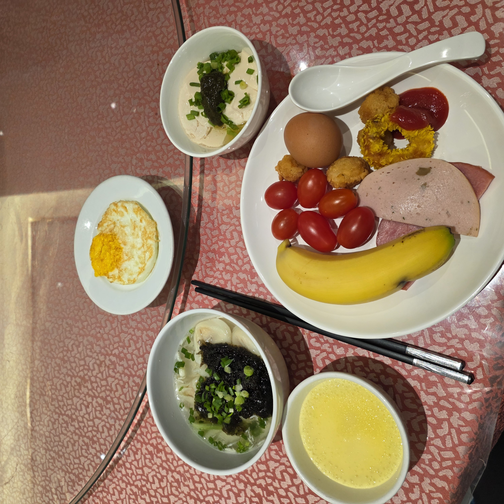
여행 둘째 날 아침은 호텔 조식으로 열었습니다. 반숙란과 햄, 부드러운 순두부에 따끈한 완탕국까지 담아 두니 소박하지만 속이 편안하게 데워졌어요. 다롄의 10월 아침은 서울보다 2~3도쯤 낮고 바닷바람이 제법 찹니다. 뜨끈한 국물 한 그릇으로 몸을 데워 두면 오전 내내 걷는 코스가 훨씬 수월하더라고요.
이날 오전 동선은 러시아풍정거리 → 둥관제 순서였습니다. 두 곳 모두 걷는 게 전부인 코스라, 저는 처음부터 편한 운동화에 얇은 겉옷 하나를 챙겨 나섰어요. 사진 찍느라 걸음이 자주 멈추게 되니, 시간은 넉넉히 잡는 편을 권합니다. 저 역시 두 거리를 이어 걷는 데 오전 반나절이 꼬박 들었어요.
러시아풍정거리는 20세기 초에 지어진 러시아식 건축이 모여 있는 문화 거리입니다. 중산광장(中山广场)에서 도보로 닿는 거리라 시내 일정에 자연스럽게 끼워 넣기 좋았어요. 별도 매표소나 게이트가 있는 관광지가 아니라 누구나 자유롭게 드나드는 개방형 거리여서, 거리 자체를 걷는 데는 입장료가 없었습니다.
거리 초입에 들어서자마자 붉은 벽돌의 유럽풍 건물이 쭉 이어져서, 여기가 중국이 맞나 싶을 만큼 이국적인 분위기였어요. 결제는 대부분 알리페이·위챗페이로 해결했는데, 미리 여권과 해외 카드를 등록해 두면 상점·카페 어디서든 편했습니다. 소액 대비로 현금을 조금만 챙겨 가면 충분했어요.
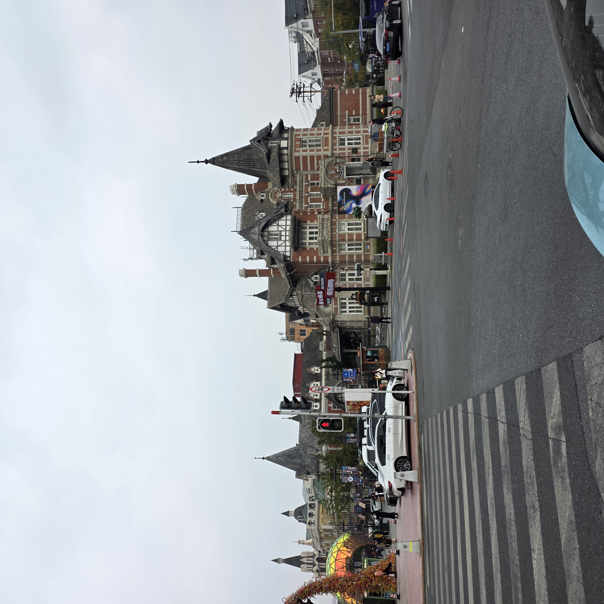
조금 더 안쪽으로 들어가니 거리의 상징 같은 무지개빛 초승달과 구형 유리 조형물이 눈에 들어왔어요. 햇빛을 받으면 표면이 알록달록하게 반짝여서, 이 앞은 사진 찍는 사람들로 늘 붐비는 대표 포토존이더라고요. 저도 자연스럽게 카메라를 꺼내 들게 됐습니다.
사람이 몰리는 포인트라, 인증샷을 여유 있게 남기고 싶다면 사람이 덜한 이른 오전이 유리합니다. 저는 오전 10시 즈음 걸었는데도 조형물 앞은 사진 순서를 살짝 기다려야 했어요. 배경이 화려해서 셀카든 인물 사진이든 어느 각도로 찍어도 그림이 잘 나왔습니다.
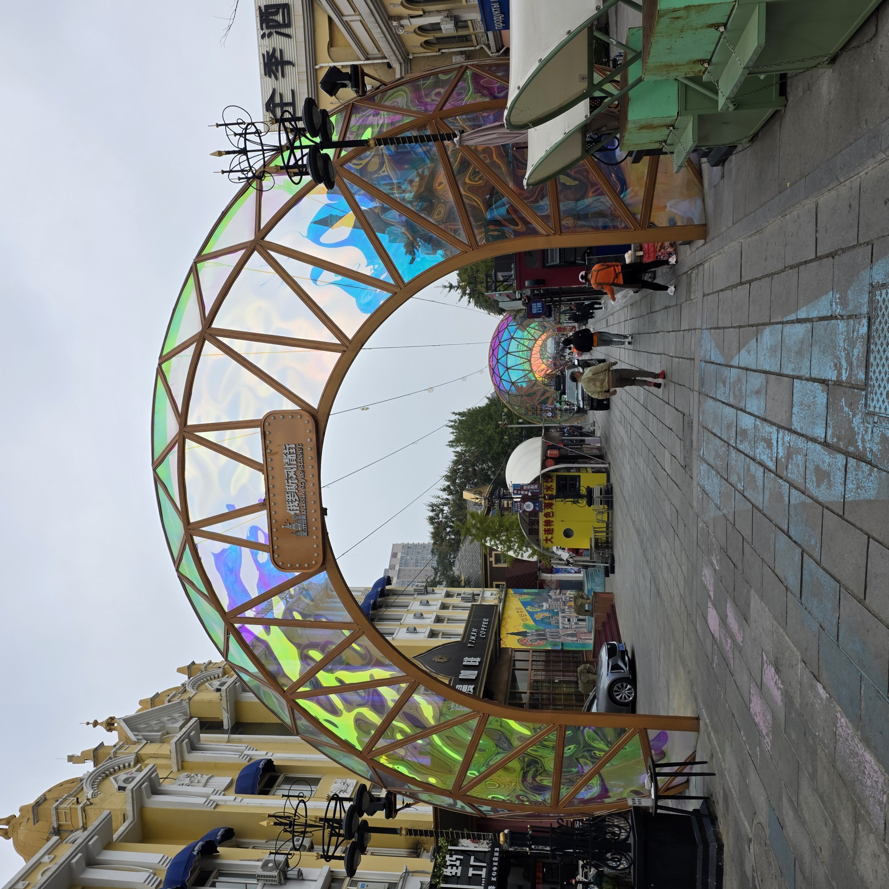
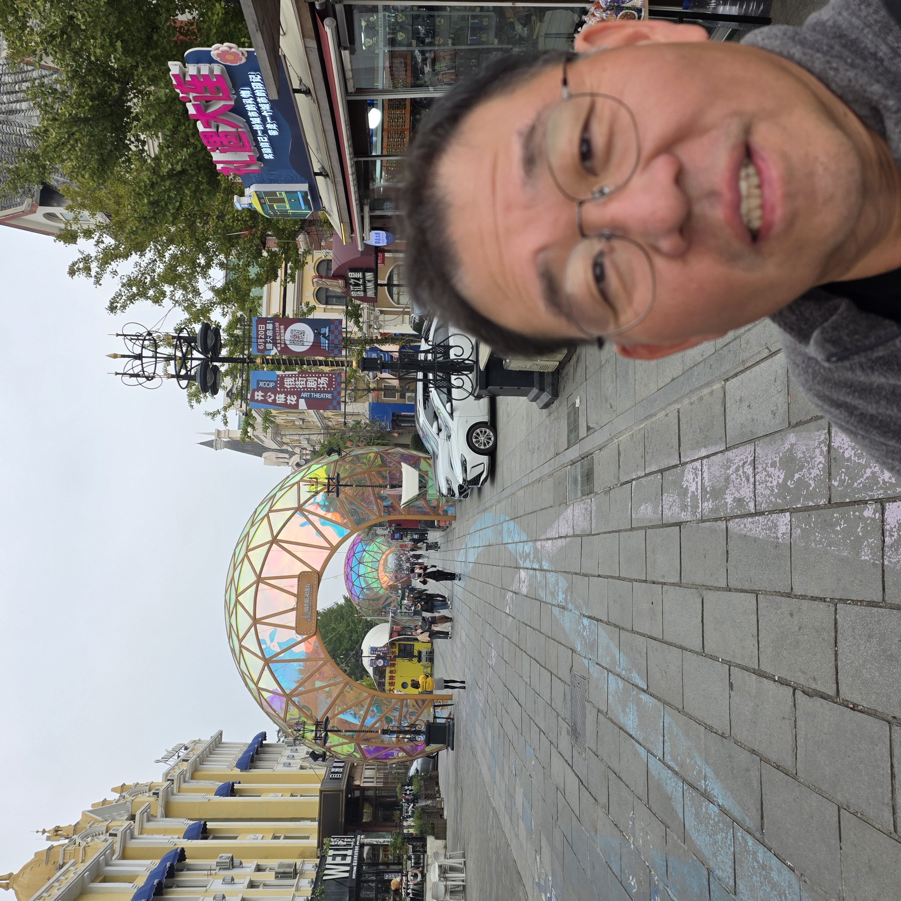
거리 양옆으로는 러시아 식품·기념품점이 이어집니다. 간판에 러시아어로 'продукты из России(러시아산 식품)'라고 적힌 가게가 여럿 보였는데, 진열대를 구경하는 재미가 쏠쏠했어요. 딱히 뭘 사지 않아도 눈으로 훑는 것만으로 이국 감성이 채워집니다.
그중 한 매장에 들어가 보니 마트료시카 그림이 그려진 러시아 초콜릿이 벽면을 가득 채우고 진열돼 있었어요. 종류가 워낙 많아서 무엇을 고를지 한참 고민했는데, 기념품이나 소소한 선물로 몇 개 담기에 딱 좋은 분위기였습니다. 개별 상품의 정확한 가격은 매장마다 다를 수 있으니, 마음에 드는 게 있으면 그 자리에서 확인하고 담는 편이 좋아요.
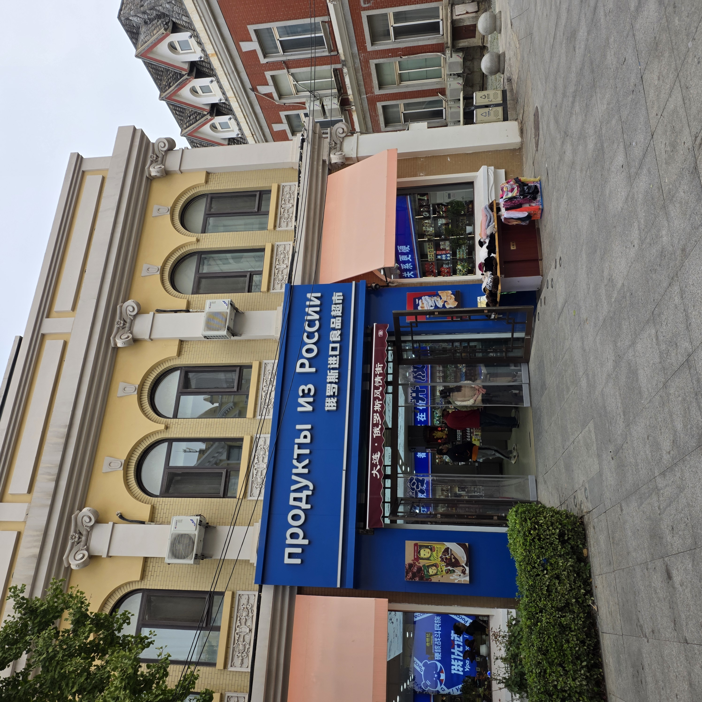
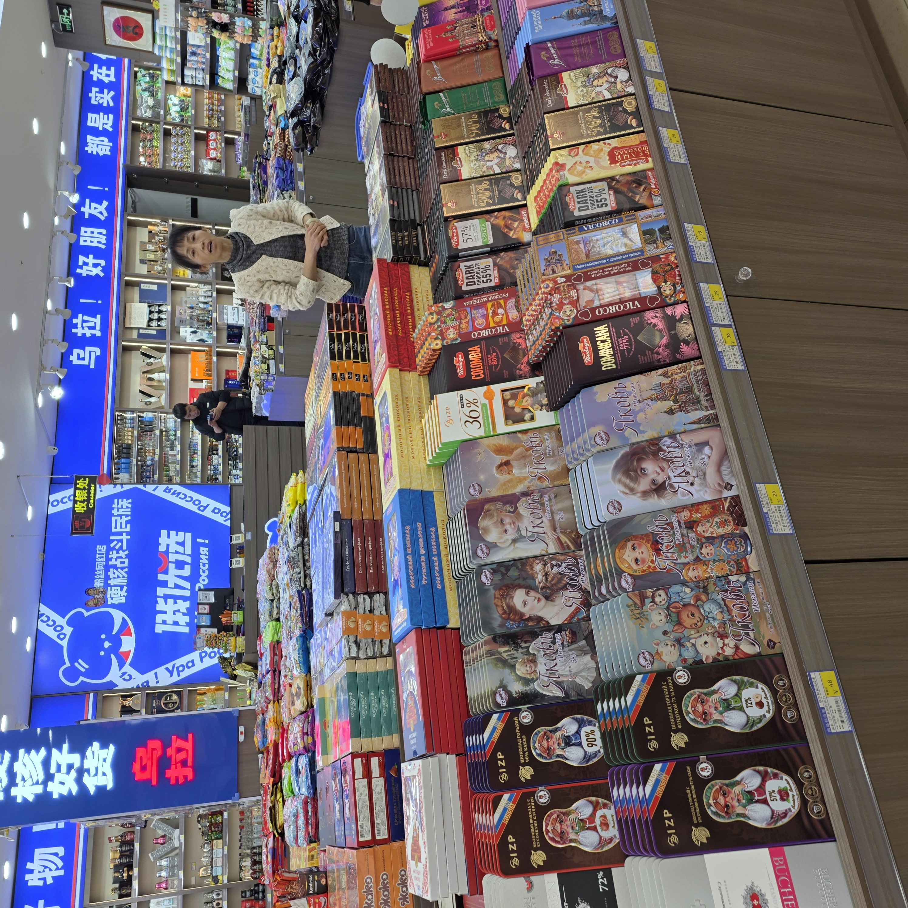
거리에서 가장 눈에 띈 건 카페 푸시킨(普希金咖啡馆)의 고딕풍 시계탑이었어요. 뾰족하게 솟은 시계탑이 하늘을 배경으로 서 있으니, 그 앞에 서기만 해도 유럽 어느 골목에 온 기분이 들더라고요. 이 앞도 사람들이 줄지어 사진을 남기는 인기 포토스팟이었습니다. 탑을 화면 가득 담으려면 길 건너편까지 살짝 물러서서 찍는 편이 잘 나왔어요.
맞은편으로는 붉은 벽돌 건물에 자리한 개심마화(开心麻花) 러시아극장이 보였어요. 코미디 공연으로 알려진 브랜드라는데, 거리 분위기와 어우러진 붉은 외벽 자체가 사진 소재로 좋았습니다. 공연 관람보다는 외관을 배경 삼아 걷는 코스로 지나쳤어요.
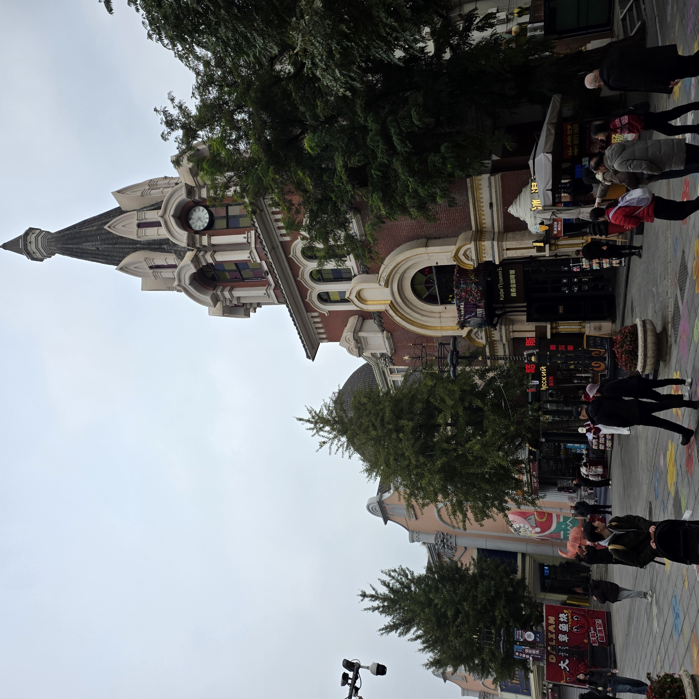
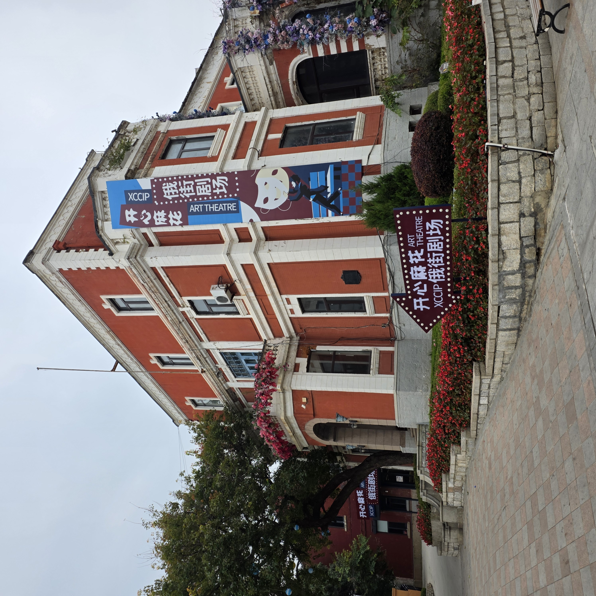
거리 끝자락에는 세월이 묻어나는 낡은 흰색 유럽풍 역사 건물이 서 있었어요. 새로 단장한 상가들 사이에 오래된 건물이 그대로 남아 있으니, 이 거리가 왜 '문화 거리'로 불리는지 조금은 알 것 같았습니다. 번쩍이는 상점만 있는 게 아니라 이런 옛 건물이 섞여 있어서, 걷는 내내 표정이 다양했어요.
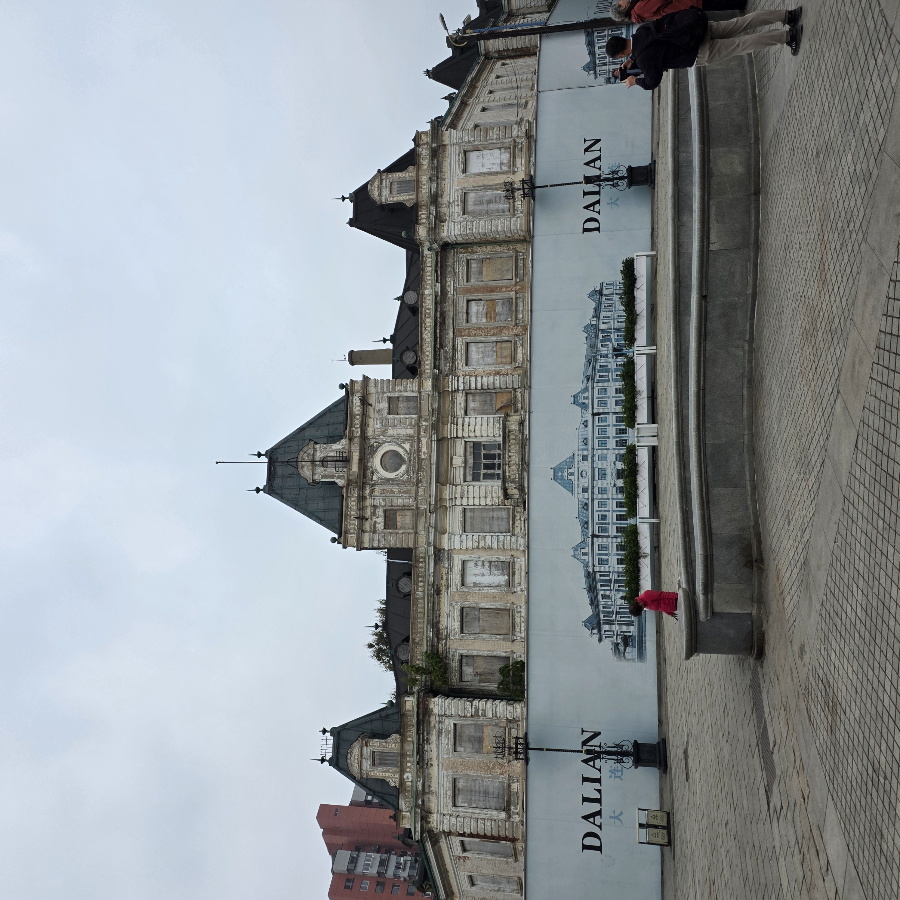
러시아풍정거리를 충분히 둘러본 뒤, 오전 후반부는 둥관제(东关街)로 옮겼습니다. 둥관제는 오래된 골목을 유럽풍으로 리노베이션해 요즘 다롄에서 감성 상권으로 뜨는 거리예요. 거리에 노면전차 레일이 남아 있어 옛 정취와 세련된 분위기가 묘하게 섞여 있었습니다.
두 거리 사이의 정확한 이동 거리·교통편은 제가 따로 기록해 두지 못했습니다. 지도앱(가오더/바이두 지도 등)으로 경로를 확인해 이동하시길 권합니다. 다롄 시내는 지하철·버스를 QR로 결제할 수 있고, 짧은 구간은 택시(디디)로도 어렵지 않게 오갈 수 있으니 상황에 맞게 고르면 됩니다.
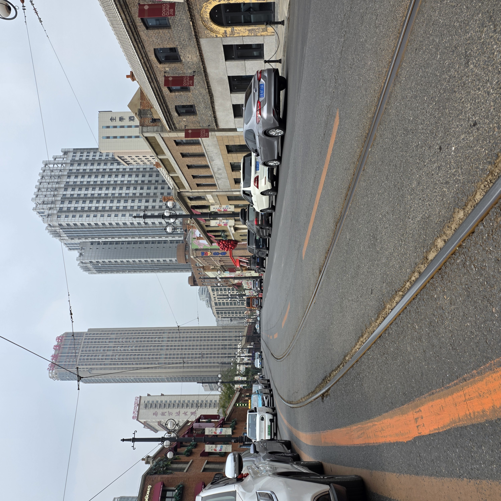
거리 입구에 서자마자 시선을 사로잡은 건 대형 흰 고양이 풍선 조형물이었어요. 건물 사이에 커다랗게 자리 잡고 있어서, 지나는 사람마다 이 앞에서 한 컷씩 남기고 있더라고요. 둥관제에 왔다면 자연스럽게 첫 인증샷을 찍게 되는 지점입니다.
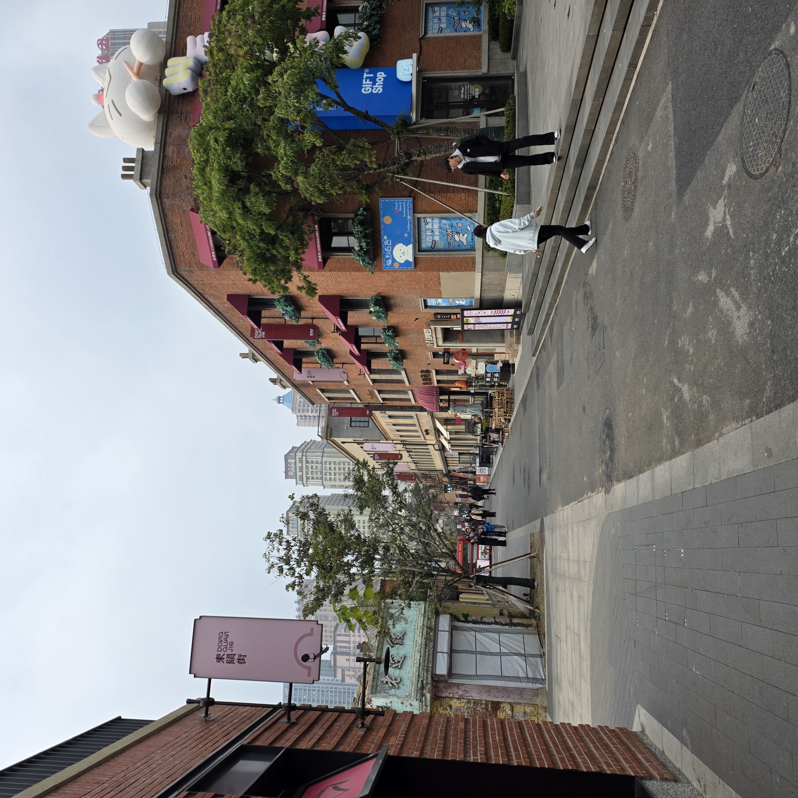
둥관제 골목은 한 걸음마다 예쁜 가게가 이어져서 걷는 내내 눈이 즐거웠어요. 먼저 붉은 벽돌로 지은 태화사운루(泰禾四云楼) 국수관이 보였습니다. 클래식한 외관이라 지나치기 아쉬워 사진으로 담았어요. 골목 자체가 먹고 마시고 구경하는 상점이 촘촘히 붙어 있는 구조라, 한 곳만 콕 집어 가기보다 천천히 훑으며 걷기 좋은 거리입니다.
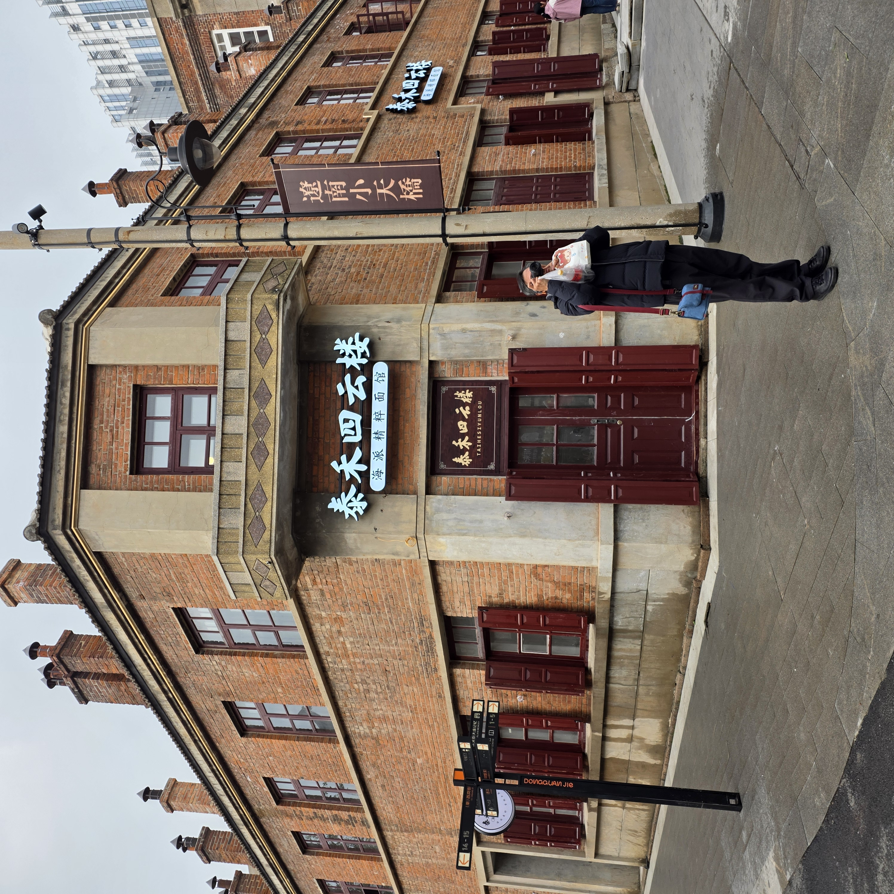
이어서 만난 자오지(赵记传承) 중국 디저트점은 전통 디저트를 파는 가게였는데, 간판과 진열이 아기자기해서 발걸음을 멈추게 했어요. 이런 소품 같은 가게가 골목 곳곳에 있어, 목적지 없이 걸어도 심심할 틈이 없었습니다.
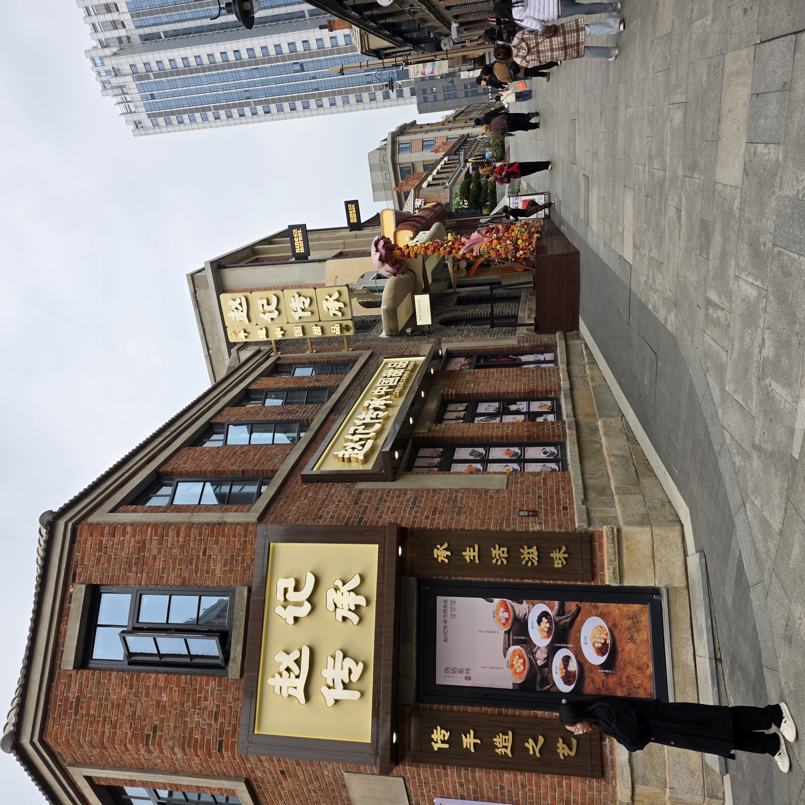
아치형 창이 예쁜 1/2 하이드아웃(HIDEOUT) 카페도 인상적이었어요. 이름처럼 골목 속 숨은 아지트 같은 분위기라, 커피 한 잔 하며 다리를 쉬어 가기 좋아 보였습니다. 오전 내내 걸었다면 이쯤에서 한 번 앉아 쉬어 가는 것도 좋겠더라고요.
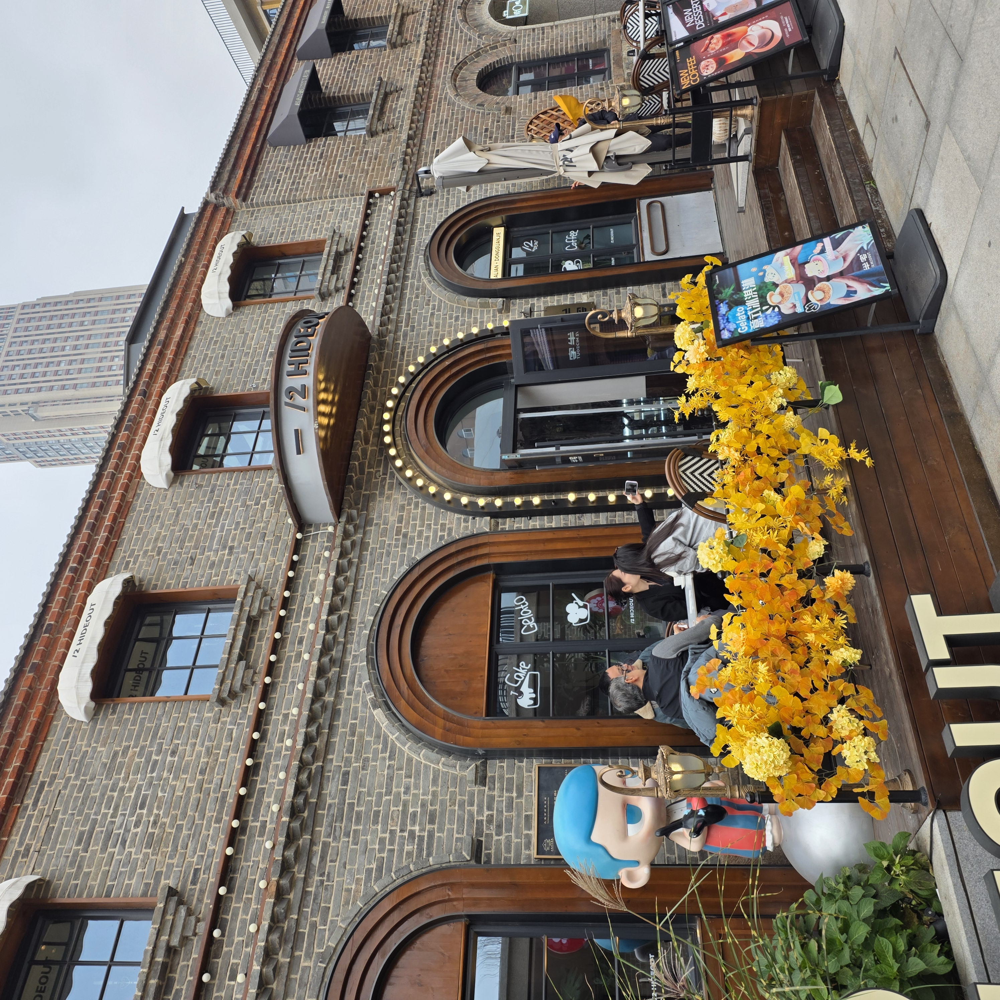
초록 식물로 가득한 블랑버니(布兰兔) 캐릭터숍은 이 골목에서 사진이 가장 예쁘게 나온 곳 중 하나였어요. 식물 정원처럼 꾸며 놓은 외관이 토끼 캐릭터와 잘 어울려서, 여기서만큼은 여러 컷을 남기게 됐습니다. 사진이 목적이라면 이 앞은 꼭 챙기세요.
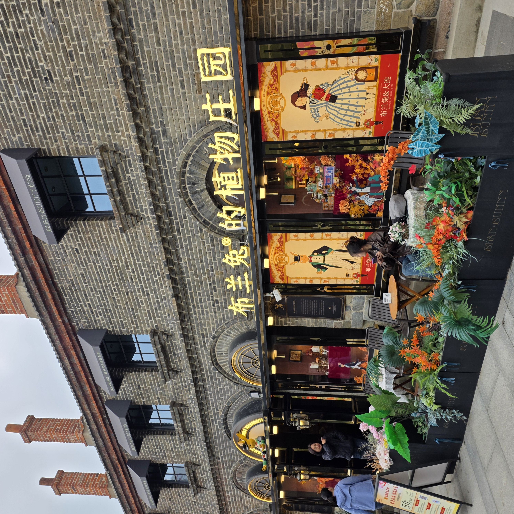
골목 한쪽에는 둥관제라는 거리명이 스테인리스로 입체 조형된 오브제가 있었어요. 반짝이는 금속 글자가 배경과 어우러져, 여기서도 자연스럽게 인증샷을 남기게 되더라고요. "둥관제에 왔다"는 걸 한 장으로 남기기 좋은 지점입니다.
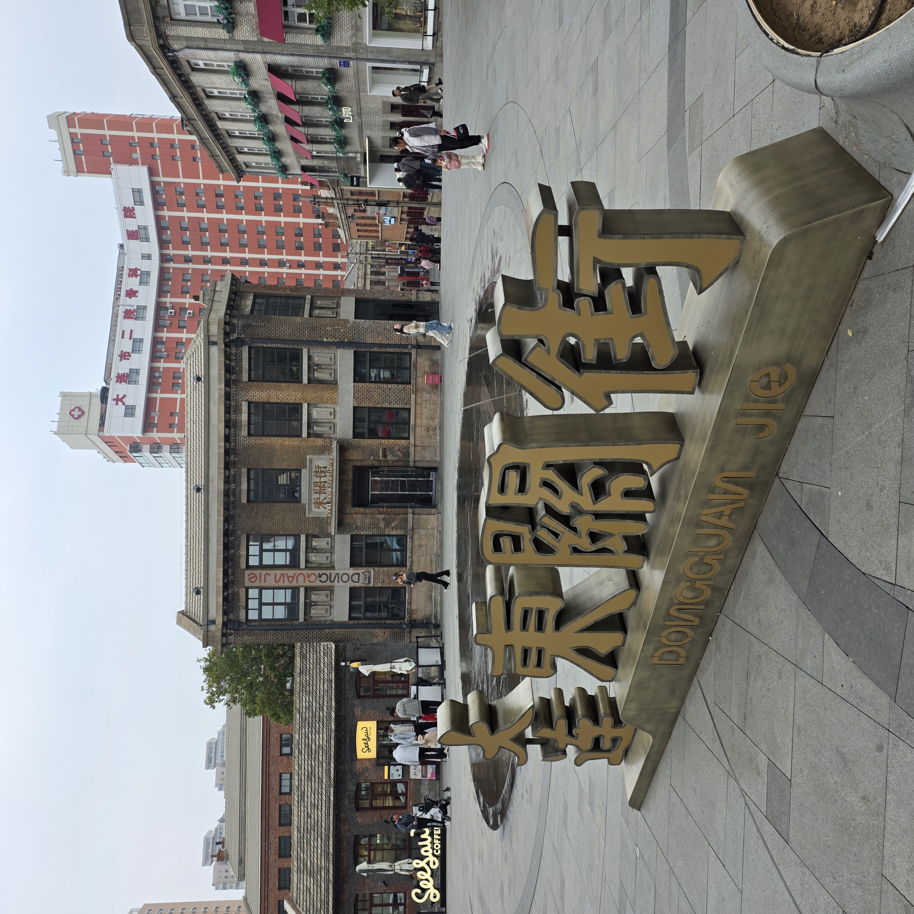
골목을 걷다 잠깐 들여다본 SeeSaw 커피 매장은 내부가 깔끔하고 세련돼서, 걷다가 커피 한 잔 마시며 쉬기 좋아 보였어요. 둥관제에는 이렇게 앉아 쉴 만한 카페가 여럿이라, 사진 → 카페 → 다시 산책 리듬으로 돌기 좋습니다.
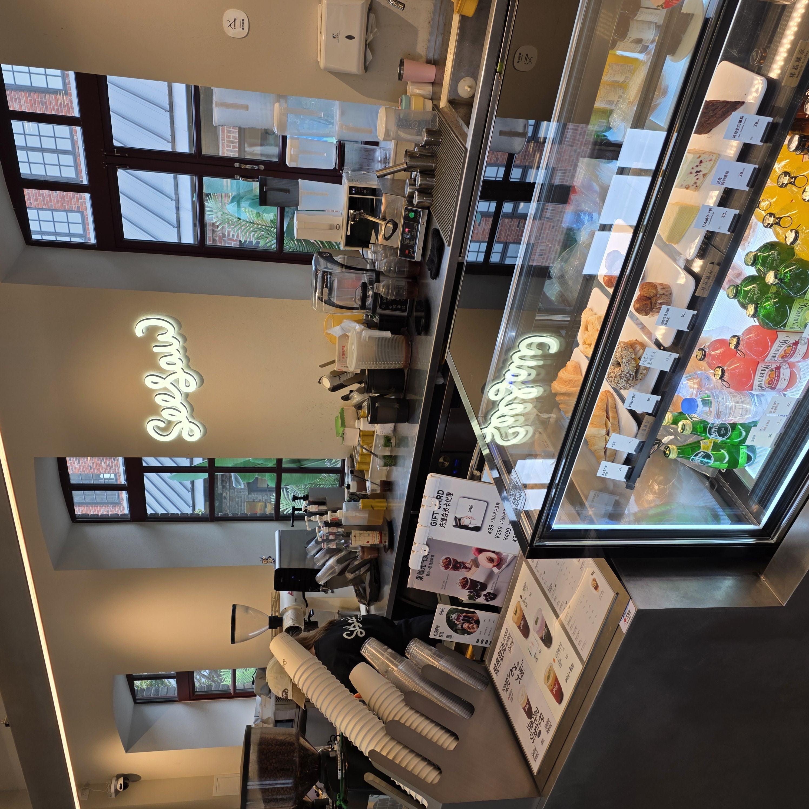
반가웠던 건 둥관제 안에 강원(KANGWON) 한식 바비큐 간판이 있었다는 점이에요. 이국적인 골목에서 한글 간판을 만나니 괜히 반갑더라고요. 여행 중 현지 음식이 물릴 때쯤 한식 한 끼가 생각난다면 이런 선택지도 있다는 정도로 알아 두면 좋겠습니다.
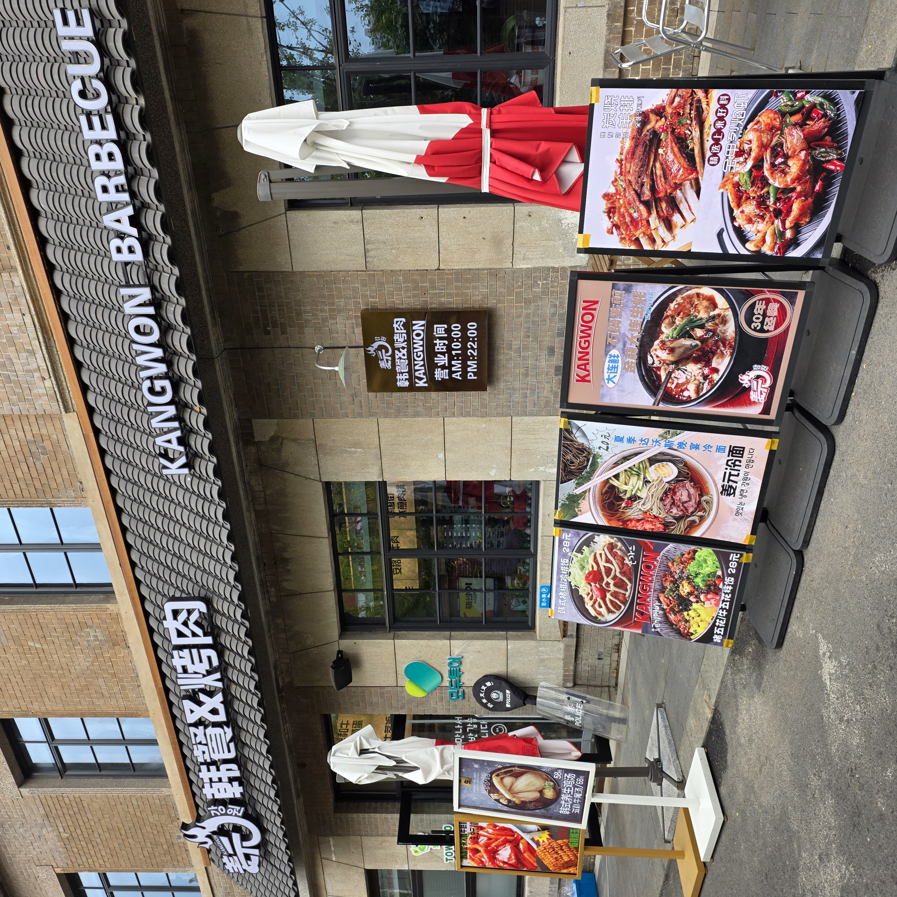
| 코스 | 러시아풍정거리(러시아 감성·포토존) → 둥관제(리노베이션 감성 상권), 오전 반나절 도보 |
| 위치·이동 | 러시아풍정거리는 중산광장에서 도보권 · 두 거리 사이 이동은 지도앱으로 경로 확인 권장(정확한 거리·교통편 미확인) |
| 입장료 | 두 곳 모두 개방형 거리라 거리를 걷는 데 별도 입장료 없음 (개별 카페·상점은 각 매장 기준) |
| 포토존 | 무지개빛 초승달·구형 유리 조형물, 카페 푸시킨 시계탑, 흰 고양이 풍선, 블랑버니 캐릭터숍, 거리명 입체 조형물 |
| 결제 | 알리페이·위챗페이(여권+해외 카드 등록)로 대부분 해결 · 소액용 현금 약간 |
| 복장·팁 | 10월 아침은 바닷바람이 차니 겉옷 필수 · 걷는 코스라 편한 신발 · 조형물 앞은 이른 오전이 한적 · 개별 상점 운영시간은 현장 확인 |
이 코스가 잘 맞는 경우는 이렇습니다. ① 유럽풍 건물과 이국 감성 사진 찍는 걸 좋아하는 분, ② 정해진 관람 순서 없이 발길 닿는 대로 걷고 카페에 들르는 자유 산책을 즐기는 분, ③ 시내 일정 사이에 반나절짜리 가벼운 코스를 끼워 넣고 싶은 분. 두 거리 다 개방형이라 예약·입장 부담 없이 즉흥적으로 들르기 좋았어요.
솔직하게 참고할 점도 남겨둘게요. ① 두 곳 모두 '걷고 사진 찍고 구경하는' 상권 거리라, 깊이 있는 유적 관람이나 웅장한 볼거리를 기대하면 다소 가볍게 느껴질 수 있습니다. ② 리노베이션된 감성 상권 특성상 비슷한 분위기의 카페·상점이 반복되기도 해요. ③ 계속 걸어야 하는 코스라 편한 신발이 없으면 금세 지칩니다. ④ 저는 두 거리 사이의 정확한 이동 거리·교통편을 기록해 두지 못했으니, 동선이 중요하면 지도앱으로 미리 확인하세요. ⑤ 개별 카페·상점의 운영시간·메뉴·가격, 조형물·전시 구성은 바뀔 수 있어 방문 전 현장 확인을 권합니다.
총평하자면, 러시아풍정거리와 둥관제는 화려한 대형 관광지는 아니지만 걷는 내내 눈이 즐거운 이국 감성 산책 코스였습니다. 러시아식 붉은 벽돌 거리에서 시작해 리노베이션 골목의 아기자기한 상점으로 이어지는 흐름이 자연스러웠고, 사진 좋아하는 저에게는 오전 반나절이 아깝지 않았어요. 다롄 시내 일정에 가볍게 걷는 반나절 코스를 넣고 싶다면 충분히 추천할 만합니다.
Q. 러시아풍정거리와 둥관제는 하루에 같이 볼 수 있나요?
네, 저는 둘째 날 오전에 두 곳을 이어서 걸었습니다. 둘 다 도보로 둘러보는 거리라 오전 반나절이면 사진 찍으며 여유 있게 볼 수 있었어요.
Q. 두 거리 사이는 어떻게 이동하나요?
정확한 이동 거리·교통편은 제가 기록해 두지 못했습니다. 지도앱으로 경로를 확인해 이동하시길 권해요. 다롄 시내는 지하철·버스 QR 결제, 짧은 구간은 택시(디디)로 오갈 수 있습니다.
Q. 입장료가 있나요?
두 거리 모두 자유롭게 걷는 개방형 거리라 거리 자체를 걷는 데 별도 입장료는 없었습니다. 다만 개별 카페·상점 이용은 각 매장 기준을 따릅니다.
Q. 결제는 어떻게 했나요?
대부분 알리페이·위챗페이로 해결했어요. 여권과 해외 카드를 등록해 두면 편하고, 소액 대비로 현금을 조금만 챙겨 갔습니다.
Q. 사진 찍기 좋은 시간대는요?
저는 오전 10~12시쯤 걸었는데 햇빛이 좋아 조형물 사진이 잘 나왔어요. 다만 인기 포토존은 사람이 몰리니, 한적하게 찍으려면 이른 오전이 유리합니다.
Q. 아이나 부모님과 함께여도 괜찮을까요?
계단이 많은 관람 코스가 아니라 평지 위주로 걷는 거리라 부담은 적은 편이었어요. 다만 계속 걷는 코스이니, 중간중간 카페에서 쉬어 가며 도는 걸 권합니다.
다음 편(④) 예고 – 다롄 2박3일 네 번째 편에서는 둘째 날 오후로 이어집니다. 현지 먹자골목 시안루(西安路)에서 배를 채우고, 바다를 낀 대광장 싱하이광장(星海广场)을 거닌 뒤, 여행의 피로를 풀어 준 발마사지까지. 다음 이야기도 기대해 주세요.